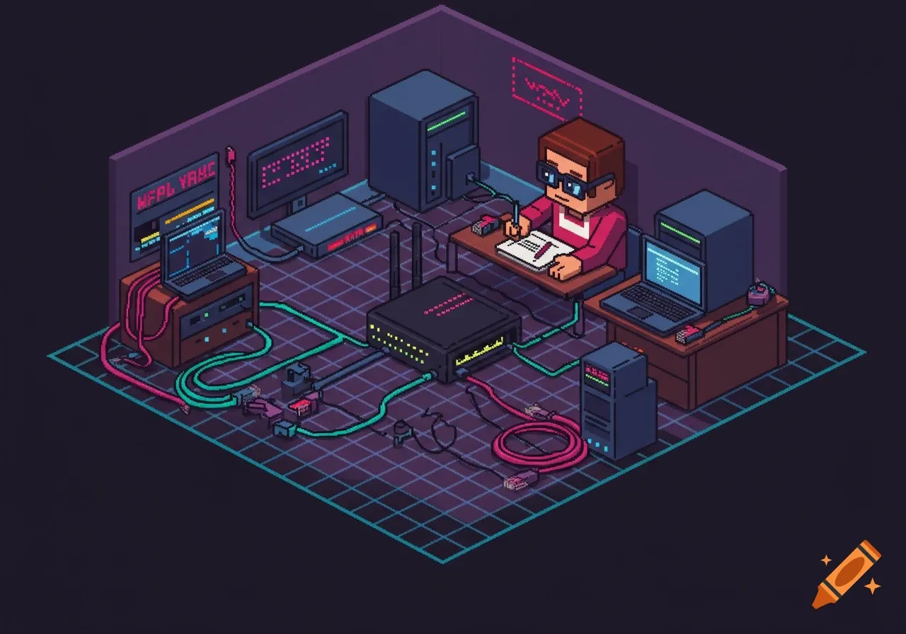
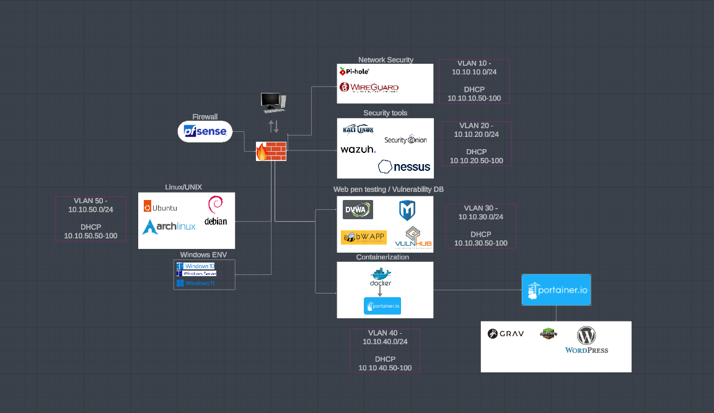

Home Labbing

To start this off I had no clue what I was doing... This is just me rambling about my experience on personal projects that I enjoy! A lot of reading, a lot of typos lol so enjoy.
This project of mine consists of several key points I wanted to target. System architecture, administration, network, and cybersecurity.I will break down exactly what I have done and my learning journey. First lets start off with the basics, hardware!
Server 01:
DELL POWEREDGE R630 8 x 2.5'' | 2X E5-2680V4 128GB RAM IDRAC ENT & NDC 495W PSU - No longer available im sure.
2x Seagate BarraCuda 2TB Internal Hard Drive HDD – 3.5 Inch SATA 6Gb/s 7200 RPM 256MB Cache
Server 02:
[HP SSD 500GB](HP SSD S700 2.5" 500GB SATA III)
I began first with a dell office desktop... 16GB of ram, slow CPU no GPU but got the job done! I was able to install Proxmox on it and begin experimenting! Unfortunately, I never documented during that time as I was in school and working help desk :). However, it was the gateway to my new drug, HOME LABBING.
Moving on...
I then purchased the first server, Dell Power Edge R630. Huge leap and poor financial decisions! The server was relatively cheap for the amount of RAM I got. Electricity? Not so much. I began playing with Idrac, raiding, and server maintenance. I dabbled with all the configurations you could set and broke the server alot.
First big boo boo I learned from DATA BACKUPS. Sorry to my GF due to me loosing several Minecraft servers I was self hosting (more on that in another section). Due to where I lived, we were often hit with power outages. Thus comes in the UPS (Uninterruptible Power Supply), giving me a few hours to safely shutdown my servers before data loss. Not to mention I had ONE 1tb HDD which when reading and writing to the drive does not like being interrupted LOL.
Boom, 1 enterprise lvl server, UPS and 2 1tb SSDs later. I had data backups and protections in place to help me with failures! Time to expand! I began small, setting up security tools. Wazuh for a SIEM, nessus for vuln scanning, kali linux for playing around, ubuntu server (docker) for hosting gaming servers and this website! It wasnt enough... Doing more research I saw other people setting up Gaming and media servers and I was envious I wanted more.
As any other tech "enthusiast" I have a bunch of spare parts.Ripping an old gaming pc to shreds. I now have a GPU! With no other parts besides a CPU for a working PC! So... I went on PC part picker. Looked up parts that worked for what I had without breaking the bank. Oh yea! I bought a 60 server rack so I bought a chassis, then bought my parts:
4U rackmount Server LIST OTHER PARTS RICKY
Now, I own 2 servers which consume electricity and make noise in my room like no other! Thats enough of me yapping, I want to break down the specifics. Things will get more technical and some may question my understanding of these technologies. I do too but im learning.
Network Topology
Understanding the topology, follow me for a moment. Again this project is very diverse.
Main piece is my Hypervisor, Proxmox. By far the best and easiest to learn VM software out there. I have done my research...
We need networking/security, I chose Opnsense (also Ntopng for visibility).
EDR/SIEM going with Wazuh.
Zero trust access with Twingate community edition.
Docker often used with several self hosting projects: Portainer Nginx Reverse proxy SysReptor Wordpress (not this server :) ) Crafty Controller
Nessus for vulnerability scanning. Unfortunately free version is limited and I prever Wazuhs vulnerability detection.
Media server, I went with Plex/arr technologies.
For my data managing solution I chose Truenas.
Cloudflare:
